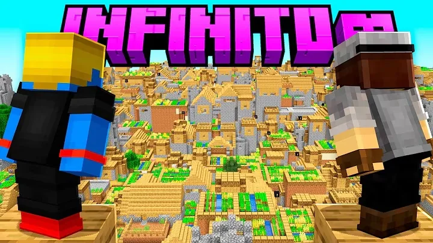
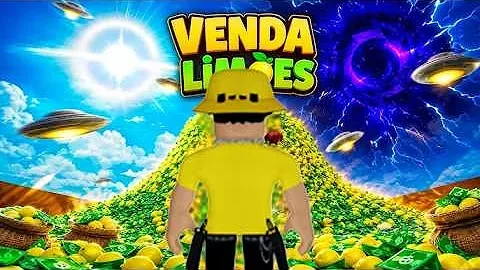

GAMEPLAY / MINECRAFT
YOUTUBE / MINECRAFT
Minecraft — Gameplay 01
Gameplay de Minecraft com edição voltada ao ritmo, ao humor e aos momentos da partida.
Edição com ritmo, personalidade e atenção aos detalhes — de gameplays e intros aos vídeos verticais para criadores e profissionais.

PROJETO EM DESTAQUEUm bom corte
muda tudo.
Seis trabalhos publicados: duas gameplays de Minecraft, uma intro, uma edição de gameplay e dois vídeos verticais.
Gameplay de Minecraft com edição voltada ao ritmo, ao humor e aos momentos da partida.
 GAMEPLAY / MINECRAFT
GAMEPLAY / MINECRAFTMais um trabalho de Minecraft, mostrando diferentes momentos e decisões de edição em gameplay.
 INTRO / EDIÇÃO
INTRO / EDIÇÃOUma abertura de vídeo: um formato curto para estabelecer o clima e apresentar o conteúdo.

GAMEPLAY / EDIÇÃOSeleção de edição de gameplay, com atenção aos cortes e à dinâmica do conteúdo.
 VÍDEO VERTICAL
VÍDEO VERTICALEdição em formato vertical para conteúdo profissional, com comunicação objetiva e ritmo.
 SHORT / VERTICAL
SHORT / VERTICALVídeo curto voltado ao público infantil, com linguagem e montagem adequadas ao formato.
Os seis vídeos podem ser assistidos nesta página ou diretamente no YouTube. A reprodução embutida depende das permissões de cada vídeo e da conexão do visitante.
Do material bruto ao arquivo final, cada decisão de edição precisa ter uma função.
Vídeos longos com cortes, organização, ritmo e narrativa, respeitando o estilo de cada canal.
Conteúdo vertical com legendas, zooms e edição dinâmica para diferentes plataformas.
Humor, cortes no tempo certo e tratamento de áudio para dar energia à gameplay.
Sou Miguel Ferreira, editor de vídeo e criador da MF FRAME. Gosto de trabalhar o ritmo de cada cena, encontrar o ponto certo do corte e dar vida às ideias com som e movimento.
Atuo principalmente com conteúdo para YouTube, Shorts e vídeos de gameplay. Meu foco é adaptar a edição ao estilo de cada projeto — sem transformar tudo na mesma fórmula.
Me conta sobre o projeto, o formato e o que você precisa. A partir daí, conversamos sobre a edição e o orçamento.